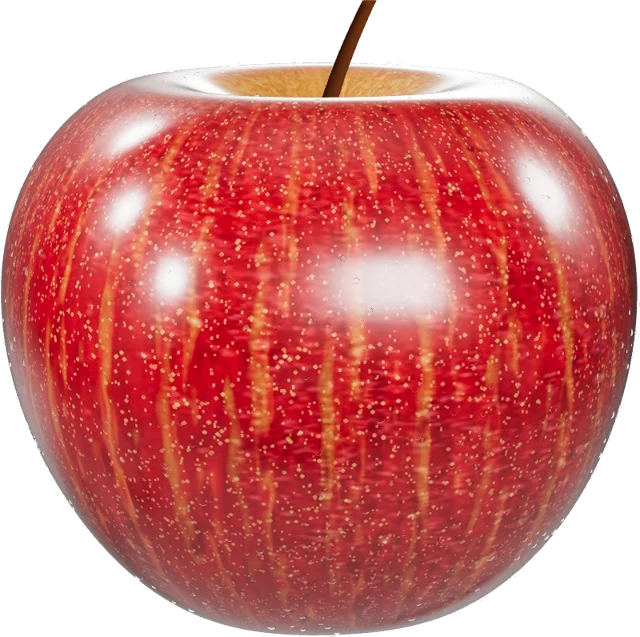

AR COLOURING PAGE
A is for Apple
- 1Lay your printed page flat in good light
- 2Point the camera at the black K✦ square
- 3Watch your apple pop up, then tap it!
Starting the camera…
ZEL XRCAMERA AR
This needs a phone camera
Open this page on a phone in Safari or Chrome and allow camera access when asked.
Looking for your page
Find the black K✦ square on your page
Hold steady · works from up to 1 m away
Drag to turn · pinch to resize · tap the apple